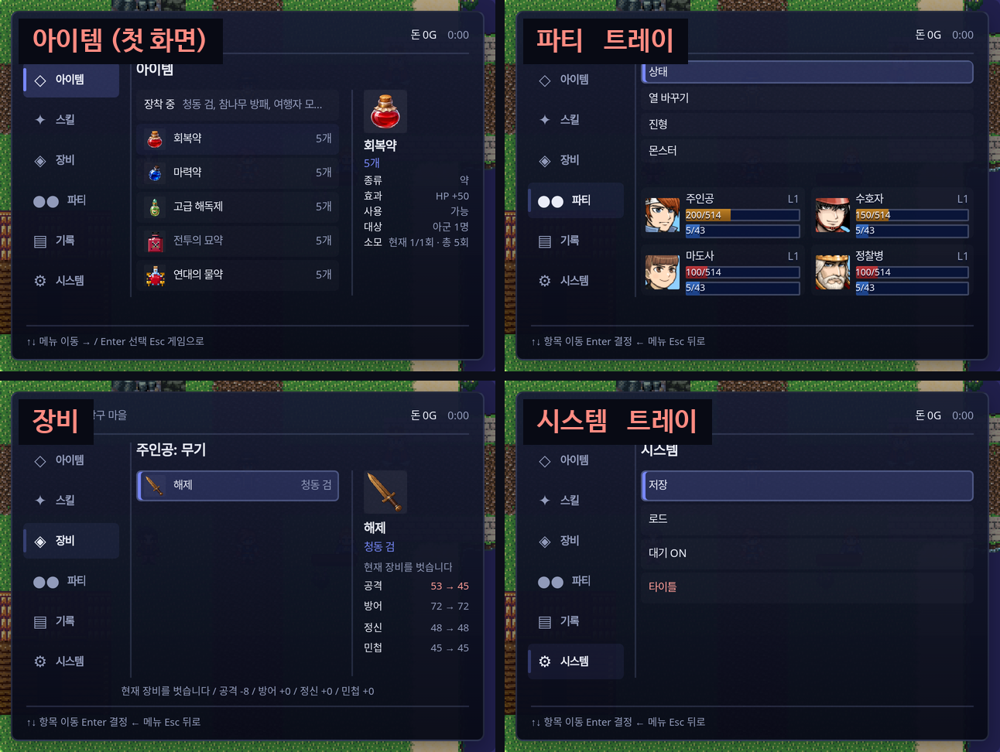
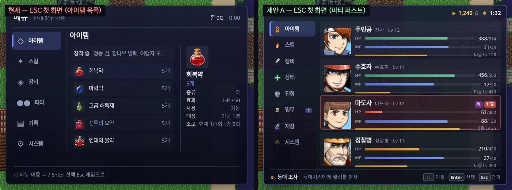
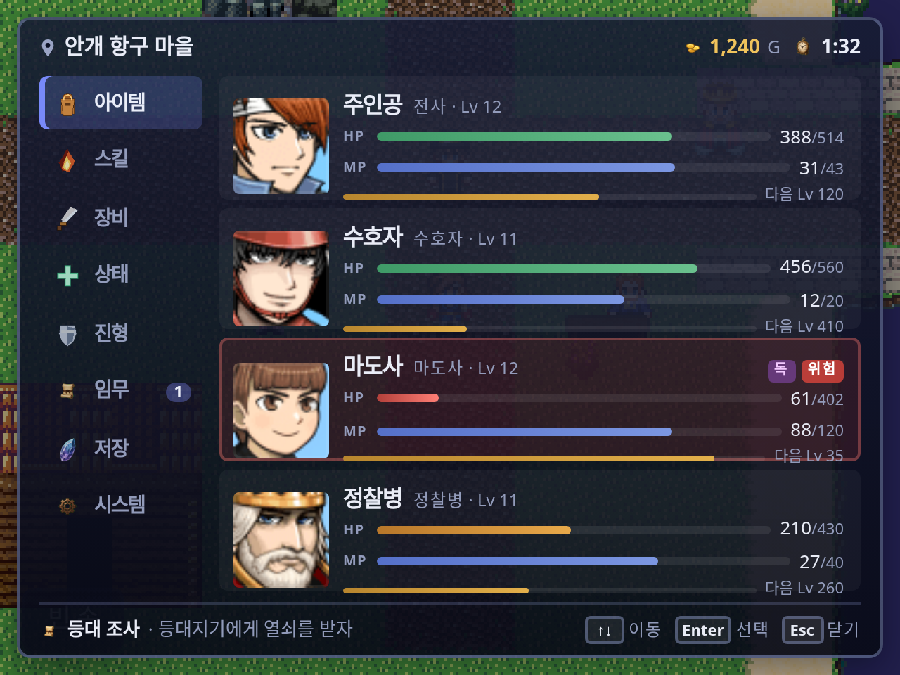
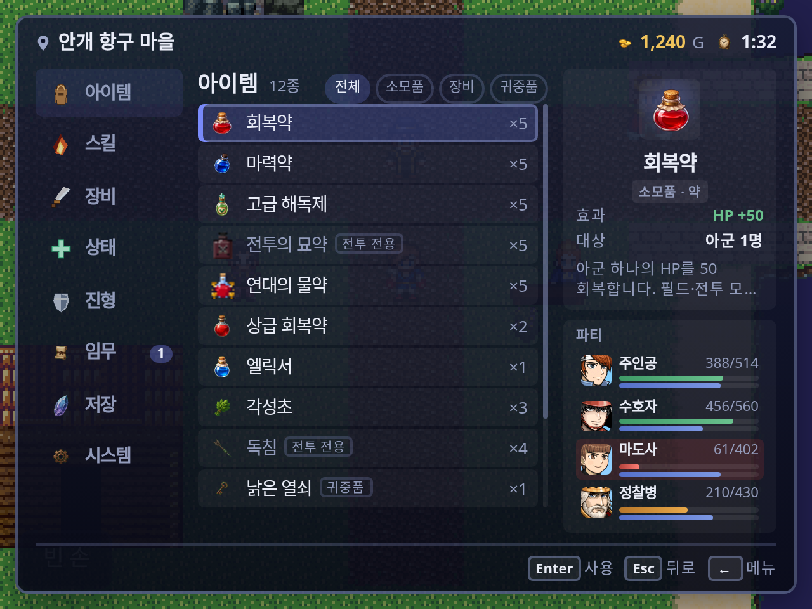
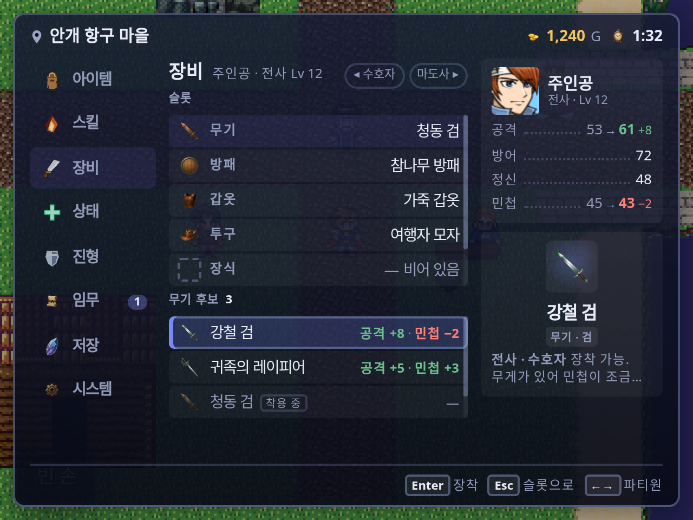
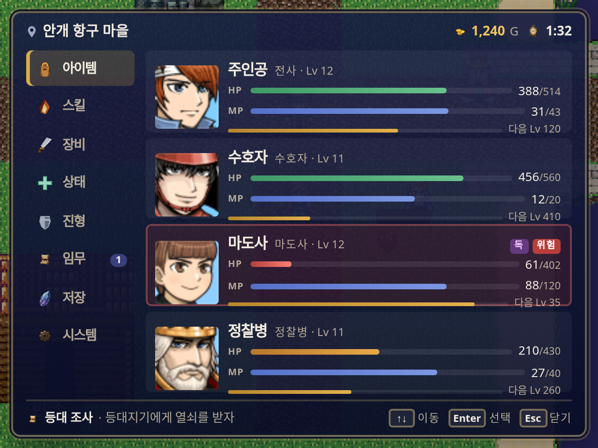
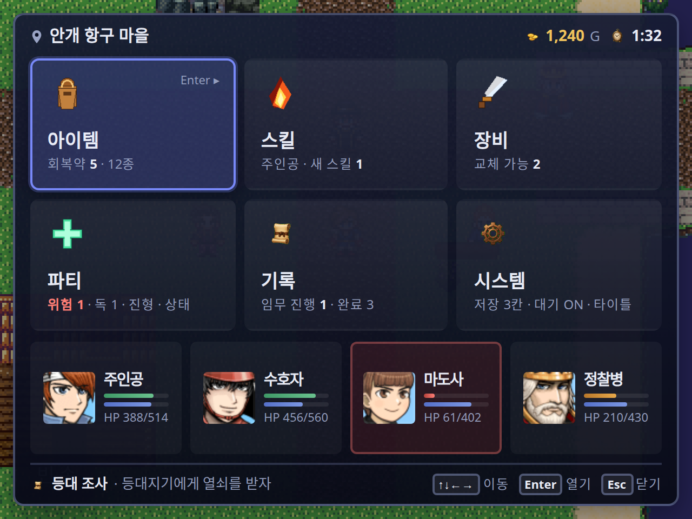
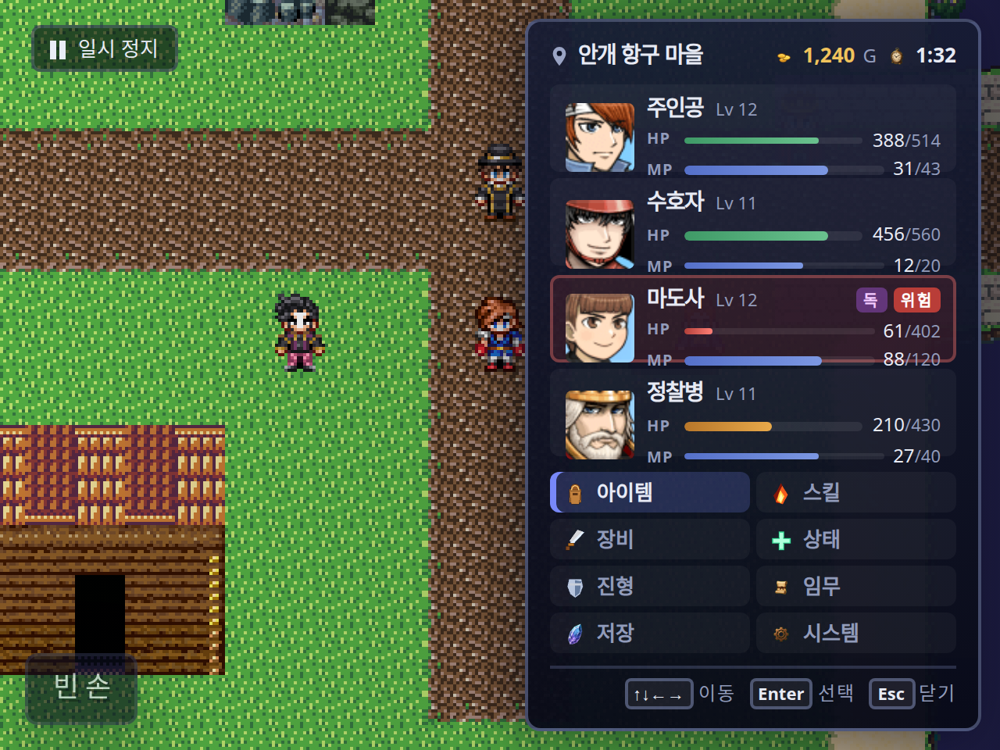

권장: A「파티 퍼스트」. 지금 코드 골격(레일 + 작업 패널 + 푸터)을 그대로 두고 첫 화면의 내용·아이콘·색의 의미·하위 화면의 오른쪽 열만 바꾼다.
- ESC 를 누르면 파티 4명의 얼굴·HP·MP·EXP·상태이상이 바로 보인다. 아이템 목록은 아이템을 골랐을 때 나온다.
- 아이콘은 전투 HUD 가 이미 쓰는 컬러 아이콘(
battle-icon-*)과 CC0 아이템 아이콘으로 통일한다. 유니코드 글리프(◇ ✦ ◈ ●● ▤ ⚙)를 없앤다. - HP 초록 · MP 파랑 · EXP/골드 호박 · 위험 빨강. 메뉴 어디서든 같은 뜻이다.
- 하위 화면(아이템·스킬·장비)의 오른쪽 열에 파티 미니가 항상 붙는다. 회복약을 고르면서 누가 아픈지 본다.
- 「파티 ▸」「기록 ▸」「시스템 ▸」 트레이를 없애고 레일을 8개로 편다(있을 때만 추가되는 항목: 몬스터·관계·생활 장부).
현재 화면 — 실제 캡처 (1280×960, 무대 4배)

좌상: ESC 첫 화면이 아이템 목록 + 회복약 쇼케이스. 우상: 「파티 ▸」를 눌러야 나오는 트레이(회색 막대 4개) 아래에 파티 2×2. 좌하: 장비 → 무기를 골랐는데 행이 「해제」 하나. 우하: 「시스템 ▸」 트레이 — 역시 회색 막대 4개.
P0첫 화면에 파티가 없다
ESC → 아이템 목록. 아군 HP 를 보려면 ↓↓↓ → 「파티」 → → 트레이 → 그 밑 카드. 회복이 급할 때 가장 느린 경로다.
P0설정창 골격
큰 「메뉴」 제목(정보량 0) · 내비 레일 · 콘텐츠 · 도움말 푸터. 게임 일시정지 화면이 아니라 앱 설정처럼 읽힌다. 단색 슬레이트, 강조색은 흐린 보라 하나.
P0글리프 아이콘
◇ ✦ ◈ ●● ▤ ⚙ — 굵기·크기가 제각각(●● 만 유난히 큼). 같은 게임의 전투 HUD 는 컬러 아이콘을 쓴다. 톤이 화면마다 어긋난다.
P1하위 화면 절반이 공백
스킬 3행, 시스템 4행, 장비 1행 뒤가 전부 빈 자리. 320×240 에서 공백은 사치다. 1열 고정 행높이 목록만 있어서 그렇다.
P1그룹 트레이
「파티 ▸」「기록 ▸」「시스템 ▸」를 누르면 아이콘도 설명도 없는 넓은 회색 막대가 뜬다. 한 단계가 늘어난 느낌만 남는다. 「기록」은 빈 임무 페이지가 첫 화면.
P1색에 뜻이 없다
HP/MP/골드/상태이상에 고정 색이 없다. 파티 화면에서만 게이지가 나오고, 상태 화면은 「HP 200/514 · MP 5/43 · 정상」 텍스트 한 줄.
같은 순간, 같은 키 — ESC 한 번

왼쪽이 현재, 오른쪽이 제안 A. 위쪽 바는 「메뉴」 대신 장소·소지금·플레이 시간. 레일은 컬러 아이콘 8개. 본문은 파티 4명(얼굴 34px · 이름 · 직업 · Lv · HP/MP 게이지+숫자 · EXP · 상태이상 칩). 위험한 마도사 행은 붉게 물든다. 푸터는 진행 중 임무 + 키 캡.
파티 퍼스트 — 골격은 그대로, 내용을 바꾼다

A-1 첫 화면. 커서는 레일에, 본문은 파티. 위험(HP ≤ 25%)은 행 전체가 붉고 「위험」 칩, 상태이상은 「독」 칩. 임무 배지(1)는 새로 갱신된 임무가 있음을 알린다. 지도는 패널 뒤로 은은히 비친다(표면 알파 .90).

A-2 아이템. 레일은 감광(포커스가 본문에 있다는 뜻). 목록은 15px 행 10개 + 얇은 스크롤바, 분류 칩(전체/소모품/장비/귀중품). 전투 전용은 감광 + 태그. 오른쪽 열 = 아이템 카드(그림·종류·효과·대상·설명) + 파티 미니. 회복약을 고르면서 누가 아픈지 보인다.

A-3 장비. 한 패널에 두 목록 — 위 슬롯 5개(현재 장비), 아래 선택한 슬롯의 후보. 후보 행에 델타를 바로 쓴다(공격 +8 · 민첩 −2). 오른쪽 열은 액터 카드 — 스탯 4줄이 후보에 따라 53 → 61 로 갱신되고, 오르면 초록 내리면 빨강. 지금의 「해제」 1행 + 공백이 사라진다.

A-톤 변형 「웜」. 구조는 A-1 과 같고 토큰만 바꿨다 — 남색 표면, 금빛 커서·헤어라인, 아이보리 글자. 지금의 슬레이트/라벤더가 「사무적」이라 느껴지면 이쪽. 전투 HUD·타이틀과의 통일감은 기본(글래스) 쪽이 낫다.
허브 타일 — 요약 정보가 있는 큰 버튼 6개

ESC → 타일 6개(아이템·스킬·장비·파티·기록·시스템). 타일마다 살아 있는 한 줄 요약(「회복약 5 · 12종」「위험 1 · 독 1」「저장 3칸」). 아래는 파티 스트립. 타일을 열면 A-2/A-3 같은 작업 화면으로 들어간다. 장점: 「무엇이 있는지」가 한눈에, 모던 인디 RPG 감각. 단점: 모든 명령이 한 단계 깊어지고, 요약 문구를 만들 데이터 훅이 명령마다 필요하다.
사이드 시트 — 게임을 가리지 않는 일시정지

오른쪽 146px 시트만 뜨고 주인공은 그대로 보인다(카메라는 항상 주인공을 중앙에 두므로 시트 폭이 이 이상이면 주인공을 덮는다). 위 파티 4명, 아래 명령 2열 격자, 왼쪽 위 「일시 정지」 배지. 장점: 「게임 속에 있다」는 감각, HP 확인 → Esc 가 가장 빠르다. 단점: 명령 격자가 좁아 ↑↓←→ 격자 이동이 필요하고, 하위 화면은 결국 전체 폭으로 펴야 한다(A-2 로 전환).
세 방향 비교
| A 파티 퍼스트 | B 허브 타일 | C 사이드 시트 | |
|---|---|---|---|
| ESC 직후 보이는 것 | 파티 4명 상세 + 명령 8개 | 명령 6개 요약 + 파티 스트립 | 파티 4명 + 명령 8개(격자) |
| 아이템까지 키 입력 | Enter 1회 | Enter 1회 | Enter 1회 |
| 파티 HP 확인까지 | 0회 | 0회(스트립) | 0회 |
| 지도 가시성 | 패널 뒤로 비침 | 낮음(불투명 .95) | 높음(왼쪽 55% 노출) |
| 기존 코드 재사용 | 높음 — 레일·작업 패널·푸터·포커스 규칙·모션 유지 | 중간 — main 모드에 타일 프레젠테이션 추가 | 중간 — 레이아웃 변형 + 격자 커서 |
| 비용(대략) | 2~3일 | A + 1일 | A + 1~2일 |
A 를 구현하면 무엇을 만지나
- 첫 화면 = 파티.
renderPlayerStatusMenu의 main 모드에서 작업 패널 자리에 파티 개요를 그린다.renderPartyPanel이 이미 있다 — 행 레이아웃(얼굴 34px · 게이지 2줄 · EXP · 칩)만 다시 그린다. EXP 는session.actorExperience와 성장 곡선에서 읽는다. 상태이상 칩(「독」)은 아직 데이터가 없다 — 세션에 필드 상태이상 필드가 없고condition: "정상"이 하드코딩이다. 칩 자리만 비워 두고, 상태이상이 세션에 기록되는 날 켠다. 「위험」 칩은 HP 비율만으로 지금 바로 가능하다. - 레일 평탄화.
playerStatusMenuModel.ts의COLLAPSED_GROUPS를 시스템(로드·대기·타이틀)만 남기고, 상태·진형(열 바꾸기 포함)을 최상위로. 레일에서 파티가 빠지므로 높이 제약(175px)이 풀린다 — 8~11행 × 17~20px. - 아이콘.
statusMenuCommandIcon의 글리프 문자열을 리소스 id 로 바꾸고<img>로 그린다. 후보: bag·fire·sword·cross·shield(battle-icon-*), map·crystal·gear(cc0/jetrel). - 헤더/푸터. 「메뉴」 제목 제거 → 장소·소지금·시간. 푸터 = 진행 중 임무 한 줄(
questsDetail의 첫 활성 임무) + 키 캡 3개. 설명문은 오른쪽 카드로 이사. - 오른쪽 열.
renderStatusMenuDetailPanel의 showcase 열을 「카드 + 파티 미니」로 확장(폭 84px). 장비는 슬롯 목록 아래 후보 목록을 같은 패널에 그린다(equipmentDetail이 두 목록을 내도록). - CSS. 기하는 전부
statusMenuEdgeDock.css가 소유한다 — 이 파일만 고친다. 색은--runtime-glass-*토큰 + HP/MP/EXP/위험 4색을 새 토큰으로. - 테스트.
test/runtime/esc-menu.spec.ts의 preview 비트가status-menu-party부재를 단정한다 — 의도적으로 뒤집히므로 시나리오 갱신. 기하 프로브(3 뷰포트 inside 검사)는 그대로 통과해야 한다.
목업의 수치(Lv 12, 1,240 G, 1:32, 임무 「등대 조사」)는 예시다. 얼굴·아이콘·필드는 실제 리소스와 실제 캡처다. 목업 소스: .omo/esc-menu-proposal/mock/(gitignore) — build.mjs 가 HTML 6장을 만들고 Playwright 로 찍는다.